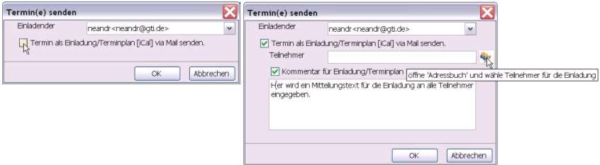
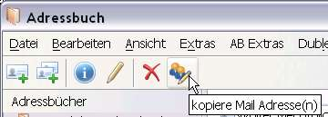
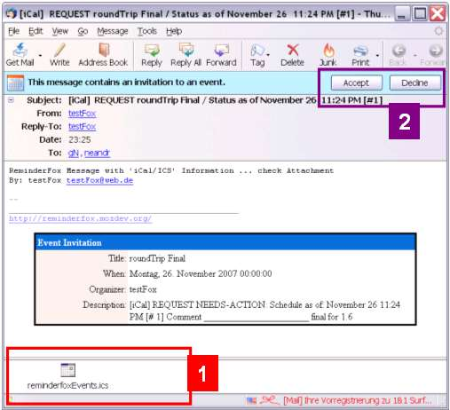
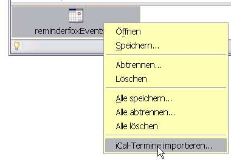
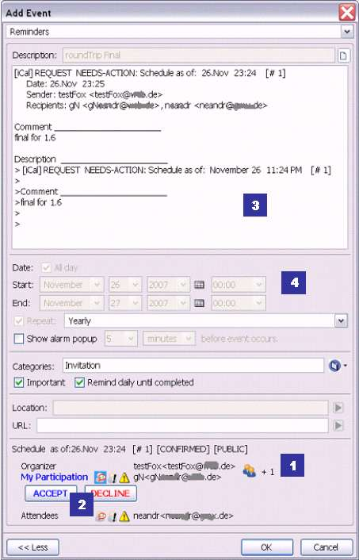
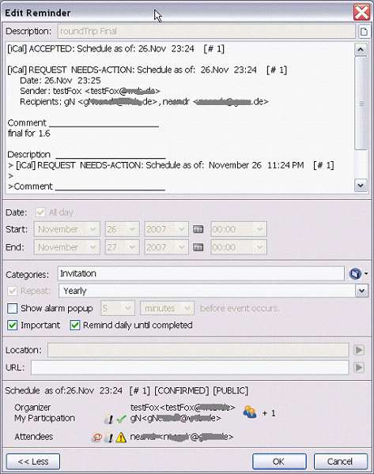
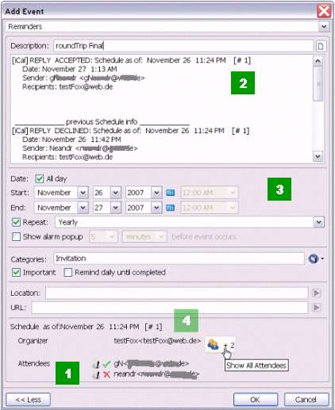

Im ReminderFox gespeicherte Termine können als Einladungen versendet werden. Antwortet der Eingeladene darauf (Bestätigungen/Ablehnungen etc) kann dies dem Termin zugefügt werden, ebenso Einladungen die der Benutzer per E-Mail erhält. Einladungen sendet der Organisator eines Termins per E-Mail an die erforderlichen oder gewünschten Teilnehmer. Er erwartet eine Antwort (RSVP) von den Eingeladenen und kann diese Antworten in seine Terminliste übernehmen und so den Status verfolgen. Die Teilnehmer können ihrerseits -- sofern sie auch Reminderfox einsetzen -- diese Einladungen in ihre Terminliste übernehmen, ihre Antwort senden und diesen Status als Termin in der ReminderFox Liste führen. Reminderfox Einladungen basieren auf dem Internet Protokoll "iCal / iTIP" das die Interoperabilität zwischen Kalender-Systemen definiert.
[iCAL] - specifies a core specification of objects, data types, properties and property parameters (siehe RFC2445) [iTIP] - specifies an interoperability protocol for scheduling between different implementations (siehe RFC2446) Hinweis: Siehe auch Einladungsfunktionen nutzen mit Firefox und Thunderbird/Seamonkey/Postbox.
In der Reminderfox Terminliste werden die zu versendenden Termine markiert. Mittels des Kontext Menüpunktes [Termin Exportieren / Senden] wird der Einladungsprozess eingeleitet. Werden mehrere Termine ausgewählt, so sendet Reminderfox diese als 'Termin Information'. Wird nur ein Termin ausgewählt, kann der Benutzer entscheiden, wie dieser gesandt werden soll.

Wird der Versand als 'Einladung/Terminplan [iCal]' gewählt, so wird das Dialogfeld erweitert. Die Teilnehmernamen mit E-Mail Anschrift müssen eingegeben werden und es kann ggf. ein Mitteilungstext angefügt werden. Mit dem Symbol neben der Eingabe für Teilnehmer lässt sich das Thunderbird, SeaMonkey, Postbox (TB/SM/PB) Adressbuch aufrufen.

Im Adressbuch von TB/SM/PB werden die gewünschten Teilnehmer markiert. Mittels einer Menüschaltfläche [kopiere Mail Adresse(n)] auf der Symbolleiste des Adressbuches können die Namen und Mailanschriften kopiert werden.
Hinweis: Diese Menüschaltfläche ist ggf. auf der Symbolleiste des Adressbuches zu installieren.
Bei TB/SM/PB werden diese kopierten Angaben direkt in das Eingabefeld "Teilnehmer" des Dialogs "Termin(e) senden" übertragen. Wird Firefox verwendet, erfolgt die Auswahl im Adressbuch ebenso, aber der Eintrag in das Dialogfeld "Teilnehmer" muss separat erfolgen: Im Dialogfenster "Termin(e) senden" Cursor auf das Feld "Teilnehmer" stellen und mittels Kontextmenü [Einfügen] übernehmen. Wird der Dialog "Termin(e) senden" mit [OK] bestätigt, erstellt Reminderfox mit dem gewählten Termineintrag und den Informationen aus dem Dialogfenster "Termin(e) senden" eine Einladung, d.h.
Hinweis: Wird Reminderfox nicht mit Thunderbird, Seamonkey oder Postbox benutzt, muß ggf. die Mail-Anwendung und die Mail-Adresse des Einladenden angegeben werden.
Ist Reminderfox für die Mail Anwendung Thunderbird, Seamonkey oder Postbox installiert, können "iCalendar" Einladungen, die per E-Mail eingehen als Termineinladung in ReminderFox eingelesen werden. Derartige Einladungsinformationen können als Anhang oder innerhalb des E-Mail-Textes, als sogenanntes 'Inline' enthalten sein.

Diese Abbildung zeigt ein geöffnetes Mail einer Thunderbird Anwendung mit einer Einladungsinformation, die hier im Anhang [1] als Datei "ReminderfoxEvents.ics" enthalten ist. Die abgebildeten Schaltflächen [Accept] [Decline] im Kopf des Mail [2] gehören zur installierten Erweiterung "Lightning" -- eine andere Kalenderanwendung. Sollen die Einladungstermine auch dort verwendet werden, so ist dies mit der Lightning Bedienung separat vorzunehmen.
Hinweis: Siehe auch Reminderfox und Lightning gemeinsam verwenden
Für die Bearbeitung der Einladung mit Reminderfox wird der Anhang (hier: ReminderfoxEvents.ics) bearbeitet. Mittels des Kontextmenüs über dem Anhang-Symbol mit dem Menüpunkt [iCal-Termine importieren] aufrufen :

Mit dem Menü Punkt [iCal-Termine importieren...] wird der Dialog "Termin hinzufügen" mit den empfangenen Einladungsinformationen geöffnet:

[1] Einladungsinformationen: Dieser Bereich informiert über Details der Einladung:
Die Symbole vor den Mailadressen haben folgende Bedeutung:
[2] Die Schaltflächen [Annehmen] [Ablehnen] ermöglichen es dem Teilnehmer dem Organisator über seine Teilnahme zu informieren.
[3] In dem Notizfeld wird der Verlauf der Bearbeitung für den Termin festgehalten. Es kann nach Belieben geändert oder löscht werden ohne die Funkionalität einzuschränken.
[4] Die Daten des Termins (mit Wiederholungsoption), der Ort (Location) und der Titel (Description) können vom Teilnehmer nicht geändert werden. Dies ist nur für den Organisator möglich.
Mit der Bestätigung oder Ablehnung [2] der Einladung sendet der Teilnehmer ein Mail an den Organisator und aktualisiert seinen Termin:

E-Mails von Teilnehmern mit Einladungsantworten haben das gleiche Erscheinungsbild wie die E-Mails mit Einladungen (siehe oben). Sie werden vom Organisator geöffnet und in die Reminderfox Liste importiert:

[1] Der Organisator sieht - nach dem er auf das Symbol 'Zeige alle Teilnehmer' geklickt hat - den gesamten Terminstatus der eingelesenen Antworten der Teilnehmer [2] In dem Notizfeld wird der Verlauf der Bearbeitung für den Einladungstermin festgehalten. Es kann nach Belieben geändert oder löscht werden ohne die Funkionalität einzuschränken. [3] Die Termindaten/-zeiten (mit Wiederholungsoption), der Ort (Location) und der Titel (Description) können nur vom Organisator geändert werden.
Wichtiger Hinweis:
Eine Änderung dieser Einträge bedeutet eine wesentliche Änderung des Termins und erzeugt automatisch ein Mail an die Teilnehmer. Diese Terminänderung wird durch ein neues Datum und eine andere Nummer ausgewiesen, dies würde an Position [4] erscheinen.
Die ReminderFox Einladungsfunktionen nutzen E-Mail (Thunderbird/Seamonkey/Postbox) zum Senden und Empfangen der Einladungsdaten. Die Benutzung von Firefox gestattet die in ReminderFox gespeicherten Einladungen anzuzeigen. Zur Erkennung der Namen / E-Mail Adressen sind jedoch die E-Mail Konto Einstellungen erforderlich, die hier nicht zur Verfügung stehen. Der volle Funktionsumfang ist mit der ReminderFox Installation in Thunderbird/Seamonkey/Postbox gegeben. Der Versand von Terminen als Einladung kann auch mit in ReminderFox gespeicherten Terminen eingeleitet werden (Funktion "Termin Exportieren / Senden"). ReminderFox nutzt hier im Hintergrund die E-Mail Funktionen der ReminderFox Installation auf Thunderbird/Seamonkey/Postbox.
Der Abschnitt Teilnehmer dient nur zur Information wer an dem Treffen teilnehmen soll und welche Erfordernisse für die Teilnehmer vom Organisator gesetzt bzw. von den Teilnehmern zurückgesandt wurden.